Recuperação de Dados: Conceitos Fundamentais
Conceitos Fundamentais
A recuperação de dados é um processo técnico que envolve a restauração de informações armazenadas em dispositivos digitais que se tornaram inacessíveis, foram apagadas ou sofreram algum tipo de falha lógica. Diferentemente da ideia comum de que um arquivo apagado deixa de existir imediatamente, a realidade é que os sistemas de armazenamento operam de maneira muito mais estruturada e previsível.
Todo dispositivo de armazenamento organiza seus dados em unidades físicas chamadas setores. Esses setores são agrupados em blocos maiores conhecidos como clustersCluster é o menor bloco lógico de alocação usado pelo sistema de arquivos para gravar dados., que são utilizados pelo sistema de arquivos para armazenar informações. O sistema operacional não trabalha diretamente com os dados brutos; ele utiliza estruturas lógicas que registram onde cada arquivo está localizado, qual seu tamanho e quando foi criado ou modificado.
Compreender essa separação entre dados físicos e metadados estruturaisMetadados descrevem o arquivo (nome, timestamps, localização, tamanho), não o conteúdo em si. é essencial para entender como a recuperação funciona.
Como os Dados São Registrados no Sistema
Quando um arquivo é criado, o sistema grava o conteúdo em clusters físicos e, simultaneamente, registra informações estruturais que descrevem aquele arquivo. Essas informações incluem o nome, o tamanho, a localização física e os timestamps associados.
Esses registros permitem que o sistema saiba exatamente como acessar o conteúdo armazenado. Sem essa estrutura lógica, os dados seriam apenas sequências de bytes sem organização aparente.
Cada sistema de arquivos possui sua própria maneira de organizar essas estruturas, mas o princípio permanece o mesmo: existe sempre uma camada que descreve o arquivo e outra que contém os dados propriamente ditos.
Essa distinção é fundamental para compreender o que ocorre quando um arquivo é removido.
O Que Acontece Quando Um Arquivo é Apagado
Ao apagar um arquivo, o sistema normalmente não remove imediatamente os dados físicos do dispositivo. O que ocorre é a remoção da referência estrutural que aponta para os clusters onde o conteúdo está armazenado. O espaço anteriormente ocupado é marcado como disponível para reutilização.
Enquanto nenhum outro dado for gravado naquele local, o conteúdo original permanece fisicamente intacto.
Esse processo é conhecido como exclusão lógicaExclusão lógica remove referência. Exclusão física só ocorre após sobrescrita real dos blocos.. A exclusão física só acontece quando os clusters são sobrescritos por novas informações.
É justamente nesse intervalo entre a exclusão lógica e a sobrescrita física que a recuperação de dados se torna possível.
Formas de Recuperação de Dados
Existem duas abordagens principais para recuperar arquivos apagados. A primeira utiliza a própria estrutura do sistema de arquivos. Quando os registros estruturais ainda estão presentes, mesmo marcados como excluídos, é possível reconstruir o arquivo com precisão, pois ainda existe informação sobre sua localização e tamanho.
A segunda abordagem ignora completamente a estrutura lógica e examina diretamente os dados brutos do dispositivo. Esse método é conhecido como data carvingData carving recupera arquivos por assinatura binária, mesmo sem metadados válidos.. Ele se baseia na identificação de assinaturas binárias características de determinados formatos de arquivo.
Arquivos de imagem, por exemplo, possuem sequências iniciais específicas que indicam seu formato. O mesmo ocorre com vídeos e áudios. Ao localizar essas assinaturas no espaço não alocado do dispositivo, é possível reconstruir arquivos mesmo que suas referências estruturais tenham sido removidas.
Essa técnica é particularmente útil quando o sistema de arquivos está corrompido ou quando os registros originais não estão mais disponíveis.
Preservação do Estado Original
Antes de qualquer tentativa de recuperação, é fundamental preservar o estado original do dispositivo. Conectar uma mídia diretamente a um sistema operacional pode gerar alterações automáticas, como atualização de timestamps, criação de arquivos temporários e registros internos.
Essas pequenas modificações podem alterar a estrutura original e comprometer a precisão da análise.
Por esse motivo, o procedimento adequado consiste em criar uma imagem bit a bit do dispositivo e realizar toda a análise sobre essa cópia.
O Que é Uma Imagem Bit a Bit
Uma imagem bit a bit é uma cópia exata do dispositivo, realizada setor por setor. Diferentemente de uma simples cópia de arquivos visíveis, essa imagem inclui todo o conteúdo da mídia, inclusive espaço não alocado, fragmentos residuais e estruturas internas do sistema de arquivos.
Isso significa que mesmo arquivos apagados e dados aparentemente invisíveis são preservados na imagem.
Após a criação dessa imagem, é recomendável gerar um hash criptográfico, como SHA-256Hash criptográfico funciona como impressão digital da evidência; qualquer alteração muda o valor.. Esse hash funciona como uma impressão digital matemática da cópia. Se qualquer bit for alterado, o valor do hash será diferente, permitindo verificar a integridade do arquivo de imagem.
Trabalhar sobre a imagem, e não sobre o dispositivo original, garante que o estado inicial seja preservado durante todo o processo de recuperação.
Objetivo Prático do Estudo
Neste artigo será demonstrado, de forma prática e detalhada, como realizar a recuperação de dados utilizando um pendrive como base experimental. A escolha do pendrive se deve ao seu tamanho reduzido, o que facilita a execução e o acompanhamento das etapas. No entanto, a metodologia aplicada é a mesma utilizada em qualquer outro dispositivo de armazenamento.
O processo incluirá a identificação correta do dispositivo, a criação da imagem bit a bit, a verificação de integridade, a identificação do sistema de arquivos e a recuperação de imagens, vídeos e áudios apagados.
Além da restauração dos arquivos, será realizada a análise de metadados e a verificação estrutural dos conteúdos recuperados, demonstrando não apenas como restaurar informações, mas também como interpretar corretamente os dados obtidos.
Nos próximos passos, iniciaremos a parte prática com a identificação do dispositivo e a criação da imagem bit a bit, que servirá como base para toda a análise subsequente.
Identificação do Dispositivo e Preparação para Aquisição
O primeiro passo em qualquer processo de recuperação de dados é identificar corretamente o dispositivo que será analisado. Essa etapa é crítica, pois trabalhar no disco errado pode resultar em perda irreversível de dados ou contaminação do ambiente.
Com o pendrive conectado ao sistema, foi executado o comando:
lsblkA saída obtida foi a seguinte:
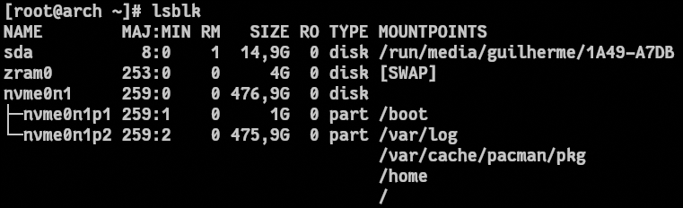
Observando a saída, é possível identificar três dispositivos principais:
nvme0n1
disco interno do sistema (476,9 GB)
zram0
área de swapSwap é uma área usada como extensão da memória RAM, normalmente para aliviar pressão de memória. em memória
sda
dispositivo removível de 14,9 GB
O campo RM = 1 indica que sda é um dispositivo removível. Além disso, o tamanho de aproximadamente 14,9 GB confirma tratar-se do pendrive utilizado no teste.
Confirmação Estrutural com fdisk
Para confirmar as informações e obter detalhes estruturais do dispositivo, foi executado:
sudo fdisk -lA parte relevante da saída referente ao pendrive foi:
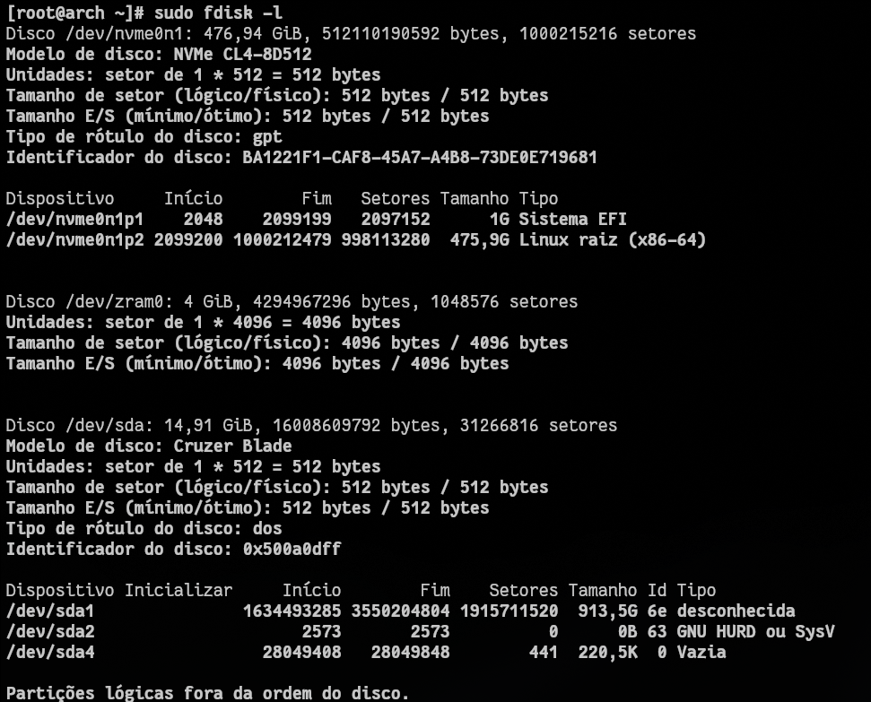
Aqui podemos extrair informações técnicas importantes:
Modelo
Cruzer Blade, confirmando tratar-se de um pendrive USB.
Tamanho
Aproximadamente 14,91 GiB, distribuídos em 31.266.816 setores.
Setores
Tamanho de setor lógico e físico de 512 bytes, comum em dispositivos USB.
Rótulo
Tipo de rótulo do disco em DOS (MBRMBR (Master Boot Record) é um esquema de particionamento tradicional, com tabela de partições no setor inicial do disco e limite de até 2 TB em muitos cenários.), usando particionamento tradicional MBRNo modelo MBR, o boot e a tabela de partições ficam no início do disco, com limitações de tamanho e quantidade de partições primárias. e não GPTGPT (GUID Partition Table) é o esquema moderno de particionamento, com maior robustez, suporte a discos grandes e mais partições..
Aquisição Bit a Bit do Dispositivo
Após identificar corretamente o dispositivo /dev/sda como sendo o pendrive Cruzer Blade de 14,9 GiB, o próximo passo foi realizar a aquisição completa da mídia.
Antes da cópia, o dispositivo foi desmontado para evitar qualquer modificação automática:
sudo umount /dev/sdaA ausência de mensagens de erro indica que o sistema desmontou o dispositivo com sucesso, deixando-o pronto para leitura direta.
Criação da Imagem Bit a Bit
Com o dispositivo corretamente identificado e desmontado, iniciou-se a criação da imagem forense utilizando o comando dd.
sudo dd if=/dev/sda of=pendrive.img bs=4M status=progressEsse comando pode parecer simples, mas sua estrutura merece ser compreendida em detalhes.
O dd é uma ferramenta de baixo nível que realiza cópia direta de dados entre dispositivos ou arquivos. Diferentemente de comandos como cp, ele não interpreta sistema de arquivos. Ele lê e escreve blocos brutos de dados exatamente como estão armazenados.
O parâmetro if=/dev/sda define o input file, ou seja, a origem da leitura. Nesse caso, trata-se do dispositivo físico do pendrive, representado pelo arquivo especial /dev/sda.
O parâmetro of=pendrive.img define o output file, que será o arquivo de destino onde a cópia será gravada. Esse arquivo passa a ser uma réplica exata do dispositivo original.
O parâmetro bs=4M define o tamanho do bloco de leitura e escrita. Isso significa que o dd irá ler e escrever blocos de 4 megabytes por vez. Utilizar blocos maiores reduz a quantidade de operações de I/O, tornando o processo mais eficiente.
O parâmetro status=progress apenas instrui o dd a exibir o progresso da cópia em tempo real, mostrando a quantidade de bytes já transferidos e a taxa média de leitura.
Resultado da Aquisição
A saída final foi:
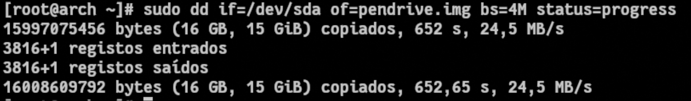
Essa informação revela vários pontos importantes.
O valor “3816+1 registros entrados” indica que foram lidos 3816 blocos completos de 4 MB e um bloco parcial final. O mesmo número aparece em “registros saídos”, indicando que tudo o que foi lido foi escrito corretamente no arquivo de destino.
O total de bytes copiados foi 16.008.609.792 bytes. Esse valor corresponde exatamente ao tamanho do dispositivo físico identificado anteriormente pelo fdisk.
Isso significa que todos os setores do pendrive foram copiados, do setor 0 até o último setor.
Quando falamos em imagem bit a bit, estamos dizendo que cada setor de 512 bytes foi copiado sequencialmente, preservando:
- Arquivos ativos
- Arquivos apagados
- Espaço não alocado
- Estruturas da FAT
- Boot sector
- Fragmentos residuais
Nada foi interpretado ou filtrado. Tudo foi copiado como dados brutos.
Verificação do Tamanho da Imagem
Após a criação da imagem, foi verificado o tamanho do arquivo gerado:
ls -lh pendrive.imgResultado:
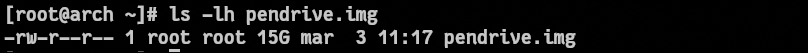
Embora o sistema mostre “15G”, isso ocorre porque está utilizando a unidade GiB (gibibytes), que é baseada em potências de 1024. O valor em bytes obtido anteriormente confirma o tamanho real de 16.008.609.792 bytes.
A correspondência entre o tamanho do dispositivo e o tamanho da imagem indica que a cópia foi fiel e integral.
Verificação de Integridade com SHA-256
Após a criação da imagem, foi gerado um hash criptográfico SHA-256:
sha256sum pendrive.imgResultado:
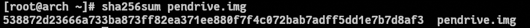
O SHA-256 é uma função matemática que processa um conjunto de dados de qualquer tamanho e produz uma saída fixa de 256 bits, representada em formato hexadecimal. Independentemente de o arquivo possuir alguns kilobytes ou vários gigabytes, o resultado sempre terá o mesmo comprimento. Essa característica permite que o hash funcione como uma identificação única do conteúdo analisado.
Ao registrar o valor do hash imediatamente após a criação da imagem, estabelece-se um ponto de verificação confiável. Em qualquer momento futuro, é possível recalcular o SHA-256 da imagem e comparar com o valor original. Se ambos coincidirem, há garantia matemática de que o arquivo permanece inalterado.
Esse procedimento transforma a imagem adquirida em um artefato verificável. Ele assegura que toda análise subsequente seja realizada sobre uma cópia íntegra e preservada, eliminando dúvidas quanto à autenticidade dos dados examinados.
Identificação do Sistema de Arquivos
Com a imagem pendrive.img criada e validada por meio do hash criptográfico, o próximo passo consiste em compreender como os dados estão organizados internamente. Para isso, é necessário identificar o sistema de arquivos presente na mídia, pois toda a lógica de recuperação dependerá dessa estrutura.
A análise foi realizada com o comando:
fsstat pendrive.imgA ferramenta fsstat, integrante do Sleuth Kit, examina diretamente as estruturas internas do sistema de arquivos contido na imagem, interpretando seus metadados e apresentando informações sobre layout, organização e parâmetros estruturais.
A saída revelou que o dispositivo utiliza o sistema de arquivos FAT32FAT32 é um sistema de arquivos leve e compatível com vários sistemas operacionais, muito comum em pendrives e cartões de memória.:
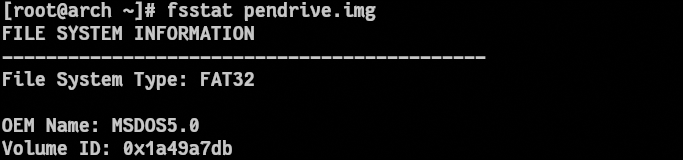
A identificação do FAT32No FAT32, os arquivos são mapeados por uma tabela de alocação, com estrutura simples e sem journaling. é particularmente relevante porque esse sistema de arquivos possui uma arquitetura mais simples quando comparado a sistemas como NTFSNTFS é o sistema de arquivos padrão do Windows, com recursos avançados como journaling, permissões e recuperação. ou EXT4EXT4 é um sistema de arquivos comum em Linux, com journaling e melhor tolerância a falhas em uso diário.. Ele não implementa journaling e mantém uma estrutura baseada em tabelas de alocação, o que influencia diretamente a forma como arquivos apagados podem ser recuperados.
O FAT32A estrutura FAT32 registra cadeias de clusters na File Allocation Table (FAT) para localizar o conteúdo dos arquivos. organiza o armazenamento por meio de uma estrutura chamada File Allocation Table (FAT). Essa tabela funciona como um mapa que indica quais clusters pertencem a cada arquivo e em que ordem eles devem ser lidos. Quando um arquivo é criado, o sistema registra na FAT uma cadeia de clusters que compõe seu conteúdo. Quando o arquivo é apagado, essa cadeia é removida ou marcada como disponível, mas os dados físicos permanecem até serem sobrescritos.
A saída do fsstat também forneceu informações estruturais importantes:
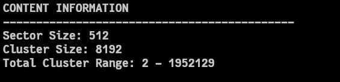
Esses valores indicam que cada setor possui 512 bytes e que cada cluster possui 8192 bytes, ou seja, 8 KB. Isso significa que cada cluster é composto por 16 setores físicos. Essa relação é essencial para compreender o comportamento do sistema durante exclusões e fragmentações.
Em sistemas FAT32, a unidade mínima de alocação é o cluster. Mesmo que um arquivo utilize apenas alguns bytes, ele ocupará pelo menos um cluster inteiro. Quando um arquivo é removido, o sistema marca o cluster como livre, mas não apaga seu conteúdo imediatamente. Se o cluster não for reutilizado, os dados ainda podem ser recuperados integralmente.
A análise estrutural também mostrou como o disco está organizado internamente:
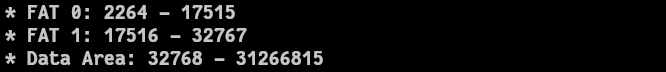
Essa informação indica que existem duas cópias da File Allocation Table, prática comum no FAT32 para redundância estrutural. A área real onde os dados dos arquivos estão armazenados começa a partir do setor 32768, dentro da chamada Data Area.
É dentro dessa região que ocorrerá qualquer processo de recuperação de conteúdo, seja por meio da reconstrução da cadeia de clusters ainda registrada na FAT ou por meio da análise direta do espaço bruto da imagem.
Outro dado relevante apresentado foi a contagem de setores livres, que aponta a quantidade de espaço atualmente marcado como disponível. Quanto maior essa quantidade, maior a probabilidade de existirem dados apagados ainda não sobrescritos.
Neste ponto da análise, já se sabe que o dispositivo utiliza FAT32, que os clusters possuem 8 KB e que os dados começam a partir do setor 32768. Essas informações estabelecem o contexto estrutural necessário para iniciar a próxima etapa: a listagem de arquivos existentes e a identificação de possíveis entradas marcadas como excluídas.
Listagem da Estrutura de Arquivos
Com a estrutura do sistema de arquivos identificada, o próximo passo consiste em examinar como os arquivos estão organizados dentro da imagem do dispositivo. Essa análise permite compreender a hierarquia de diretórios presente no sistema e identificar possíveis registros associados a arquivos que foram removidos.
Para realizar essa inspeção foi utilizada a ferramenta fls, pertencente ao conjunto de utilitários do Sleuth Kit. Essa ferramenta permite listar entradas de diretório diretamente a partir da estrutura do sistema de arquivos contida na imagem, sem depender do sistema operacional para interpretar os dados.
O comando executado foi:
fls -r pendrive.imgO parâmetro -r instrui a ferramenta a realizar uma listagem recursiva, percorrendo todos os diretórios existentes no sistema de arquivos e exibindo seus conteúdos. Dessa forma, é possível visualizar não apenas os arquivos presentes no diretório raiz, mas também aqueles armazenados em subdiretórios.
A saída obtida revelou diversos arquivos e diretórios registrados na estrutura FAT32 do dispositivo. Um trecho da listagem é apresentado a seguir:
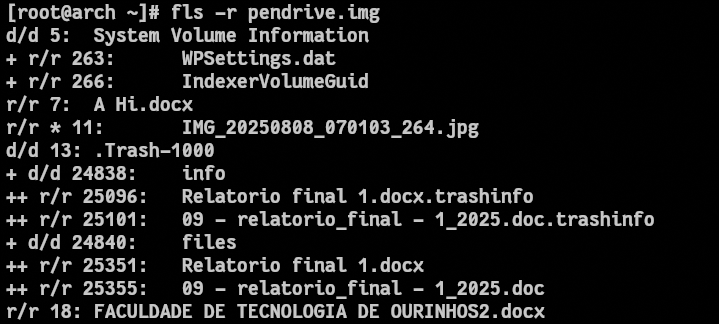
Interpretação das Entradas do Sistema
Cada linha exibida pelo fls corresponde a um registro armazenado no sistema de arquivos. Esses registros são as entradas de diretório que descrevem os arquivos existentes ou que já estiveram presentes no dispositivo.
A estrutura apresentada na saída segue um padrão específico. Os primeiros caracteres indicam o tipo de entrada, enquanto o número apresentado após essa identificação corresponde ao identificador interno utilizado pelo sistema de arquivos para localizar o conteúdo armazenado nos clusters.
No trecho observado, por exemplo:
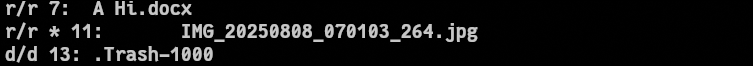
Essa linha contém diversas informações relevantes que precisam ser interpretadas individualmente.
Os primeiros caracteres da linha indicam o tipo da entrada dentro do sistema de arquivos. No exemplo apresentado, aparecem dois indicadores separados por uma barra: r/r.
O primeiro caractere representa o tipo de objeto identificado. A letra r indica que se trata de um arquivo regular (regular file). Caso fosse um diretório, por exemplo, a letra exibida seria d, indicando uma entrada do tipo diretório (directory). Em sistemas de arquivos analisados pelo Sleuth Kit, essa convenção permite diferenciar rapidamente arquivos comuns de pastas ou outros tipos de estruturas.
O segundo indicador, após a barra, também aparece como r. Esse segundo marcador refere-se ao tipo de entrada registrado dentro do sistema de arquivos. Em sistemas FAT, ele geralmente confirma que a entrada corresponde a um arquivo regular registrado na estrutura de diretórios.
Logo após esses indicadores aparece um símbolo extremamente importante: o asterisco (*).
Esse símbolo indica que o arquivo foi removido do sistema de arquivos, ou seja, sua entrada de diretório foi marcada como excluída. No FAT32, quando um arquivo é apagado, o sistema não remove imediatamente os dados armazenados no disco. Em vez disso, o primeiro caractere do nome do arquivo é substituído por um marcador especial que indica que aquela entrada está disponível para reutilização.
Enquanto essa entrada não for sobrescrita e os clusters associados ao arquivo não forem reutilizados por novos dados, o conteúdo original do arquivo permanece fisicamente presente no dispositivo. É exatamente esse comportamento que torna possível a recuperação de arquivos apagados.
Após o asterisco aparece o número 11, que representa o identificador interno da entrada no sistema de arquivos. Esse identificador funciona como uma referência utilizada pelas ferramentas do Sleuth Kit para localizar os clusters associados ao arquivo dentro da imagem analisada.
Esse número não é apenas um índice visual; ele permite acessar diretamente o conteúdo armazenado nos clusters relacionados àquela entrada. É justamente esse identificador que será utilizado posteriormente pela ferramenta icat para extrair o arquivo da imagem.
O caractere dois-pontos (:) atua apenas como separador entre o identificador interno e o nome do arquivo registrado na entrada de diretório.
Por fim, aparece o nome original do arquivo, que neste caso é IMG_20250808_070103_264.jpg. Esse nome é recuperado diretamente da entrada de diretório presente no sistema FAT32.
Ao reunir todas essas informações, é possível interpretar completamente a linha apresentada:
r/r
indica que se trata de um arquivo regular registrado no sistema de arquivos
*
indica que o arquivo foi removido
11
representa o identificador interno da entrada
IMG_20250808_070103_264.jpg
é o nome original do arquivo
Essa combinação de elementos revela algo extremamente importante para a análise: embora o arquivo não esteja mais acessível pelo sistema operacional, sua entrada estrutural ainda existe no sistema de arquivos. Isso significa que os clusters associados ao arquivo ainda podem ser acessados diretamente a partir da imagem do dispositivo.
Em outras palavras, a presença dessa entrada indica uma alta probabilidade de recuperação do arquivo.
Recuperação da Imagem Apagada
Após identificar na listagem do fls a entrada correspondente à imagem IMG_20250808_070103_264.jpg, o próximo passo foi recuperar seu conteúdo diretamente a partir da imagem do dispositivo.
Para isso foi utilizada a ferramenta icat, também pertencente ao Sleuth Kit. Essa ferramenta permite extrair o conteúdo associado a uma entrada do sistema de arquivos utilizando o identificador interno exibido na saída do fls.
O comando executado foi:
icat pendrive.img 11 > imagem_recuperada.jpgNesse comando, pendrive.img corresponde à imagem bit a bit criada anteriormente, enquanto o número 11 representa o identificador interno da entrada do arquivo dentro do sistema de arquivos FAT32. A ferramenta utiliza esse identificador para localizar os clusters associados ao arquivo e reconstruir seu conteúdo.
O símbolo > redireciona a saída do comando para um novo arquivo chamado imagem_recuperada.jpg, que passa a conter os dados recuperados.
Verificação do Tipo de Arquivo
Com o arquivo recuperado, o primeiro passo foi verificar se o conteúdo realmente corresponde a uma imagem válida. Para isso foi utilizado o comando file, que identifica o tipo de arquivo analisando sua assinatura binária.
O comando executado foi:
file imagem_recuperada.jpgA saída obtida foi:
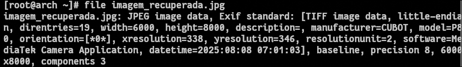
Essa informação confirma que o arquivo recuperado é uma imagem JPEG válida e que contém metadados EXIFEXIF (Exchangeable Image File Format) é um conjunto de metadados gravados em imagens digitais, incluindo dados como data/hora, modelo da câmera, resolução e parâmetros de captura. embutidos. Esses metadados são extremamente importantes porque armazenam informações técnicas geradas automaticamente pelo dispositivo que capturou a imagem.
Entre os dados identificados já é possível observar informações como resolução da imagem, fabricante do dispositivo e modelo da câmera.
Análise de Metadados da Imagem
Para obter informações mais detalhadas sobre o arquivo recuperado foi utilizada a ferramenta exiftool, amplamente utilizada para leitura de metadados em arquivos multimídia.
O comando executado foi:
exiftool imagem_recuperada.jpgA análise revelou diversas informações relevantes sobre a imagem recuperada.
Entre os metadados identificados está o dispositivo utilizado para capturar a fotografia:
Esses dados indicam que a imagem foi capturada por um smartphone CUBOT P80.
Outro conjunto de informações importante refere-se à data e hora em que a fotografia foi registrada:
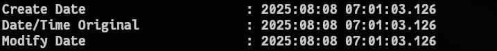
Esses campos são gerados automaticamente pelo dispositivo no momento da captura e indicam que a imagem foi registrada no dia 8 de agosto de 2025 às 07:01:03.
Também foi possível identificar parâmetros técnicos relacionados à captura da imagem, como tempo de exposição, abertura e sensibilidade ISO.
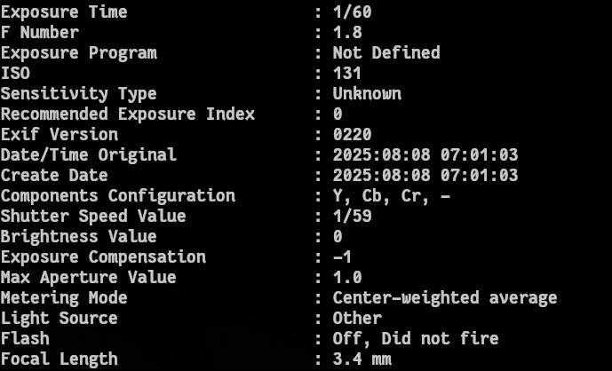
Esses valores descrevem as condições em que a fotografia foi capturada. O tempo de exposição de 1/60 de segundo indica que a câmera utilizou uma velocidade relativamente rápida do obturador, enquanto a abertura f/1.8 indica que a lente estava configurada para permitir uma entrada significativa de luz.
Outro dado importante é a resolução da imagem recuperada:
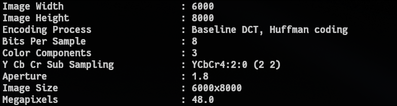
Isso revela que a imagem possui resolução de 6000 × 8000 pixels, totalizando aproximadamente 48 megapixels. Essa resolução é compatível com sensores utilizados em smartphones modernos.
Também foi possível identificar o software responsável pelo processamento da imagem:
Esse dado indica que a imagem foi processada pela aplicação de câmera padrão baseada na plataforma MediaTekMediaTek é uma empresa de semicondutores que desenvolve chipsets para smartphones e outros dispositivos, incluindo processadores de imagem e componentes de câmera..
Identificação de Localização através de Metadados
Além de informações relacionadas ao dispositivo e às configurações da câmera, muitas imagens digitais podem armazenar dados de geolocalização diretamente em seus metadados. Essas informações fazem parte da estrutura EXIFEXIF (Exchangeable Image File Format) é um conjunto de metadados gravados em imagens digitais, incluindo dados como data/hora, modelo da câmera, resolução e parâmetros de captura. (Exchangeable Image File Format), um conjunto de campos que registra automaticamente diversos parâmetros no momento em que a fotografia é capturada.
Quando um dispositivo possui acesso ao GPS e essa funcionalidade está ativa durante a captura da imagem, as coordenadas geográficas do local podem ser registradas junto ao arquivo. Esses dados são armazenados em campos específicos da estrutura EXIF, normalmente identificados como GPSLatitude e GPSLongitude.
Para verificar se a imagem recuperada continha esse tipo de informação, foi utilizada novamente a ferramenta exiftool, que permite extrair metadados detalhados diretamente do arquivo.
O comando executado foi:
exiftool -gps:all imagem_recuperada.jpgEsse comando instrui a ferramenta a exibir exclusivamente os campos relacionados à geolocalização presentes na imagem.
A análise revelou a presença dos seguintes metadados:
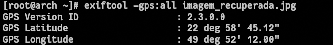
Esses valores representam as coordenadas geográficas associadas ao local onde a fotografia foi registrada. As coordenadas estão armazenadas no formato tradicional de graus, minutos e segundos, utilizado em sistemas de navegação e georreferenciamento.
Para facilitar a visualização dessas informações, também foi utilizado o comando:
exiftool -gpsposition imagem_recuperada.jpgEsse comando apresenta a posição geográfica combinando latitude e longitude em um único campo:
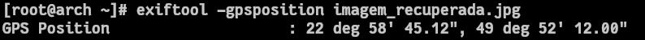
Conversão de Coordenadas para Formato Decimal
As coordenadas extraídas da imagem foram apresentadas no formato graus, minutos e segundos (DMS):
22° 58' 45.12"
49° 52' 12.00"
Esse formato é amplamente utilizado em sistemas de navegação e cartografia. No entanto, a maioria dos serviços de mapas, como Google Maps ou OpenStreetMap, utiliza coordenadas no formato decimal.
Para converter as coordenadas do formato DMS para decimal, utiliza-se a seguinte fórmula:
Conversão da Latitude
Latitude extraída:
22° 58' 45.12"
Aplicando a fórmula:
Calculando cada parte:
Somando os valores:
Resultado:
22.979233°
Como a coordenada corresponde ao hemisfério Sul, o valor deve ser representado como negativo:
-22.979233
Conversão da Longitude
Longitude extraída:
49° 52' 12.00"
Aplicando a fórmula:
Calculando:
Somando os valores:
Resultado:
49.870033°
Como essa coordenada está no hemisfério Oeste, o valor também deve ser representado como negativo:
-49.870033
Visualizando a Localização no Mapa
Uma vez obtidas as coordenadas no formato decimal, torna-se possível utilizá-las diretamente em serviços de mapas para visualizar o local associado à captura da imagem.
Uma forma simples de fazer isso é construir um link utilizando o formato aceito pelo Google Maps:
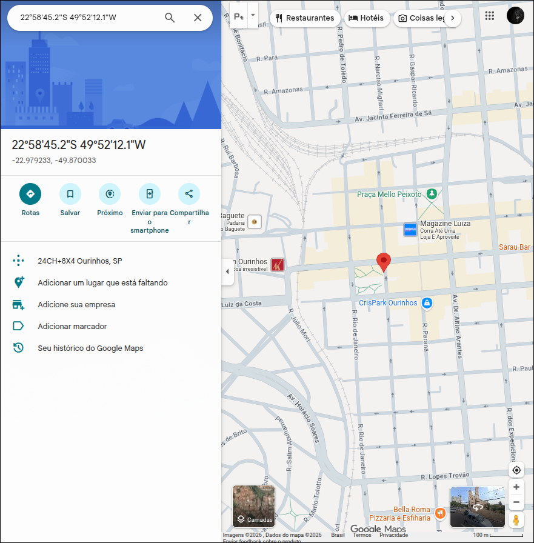
Diferentemente do formato tradicional utilizado em navegação, que separa graus, minutos e segundos, a representação decimal permite que a posição seja interpretada diretamente por aplicações e APIs de geolocalização.
Ao acessar esse endereço em um navegador, o serviço de mapas interpreta automaticamente as coordenadas fornecidas e posiciona o marcador exatamente no ponto geográfico correspondente.
Análise Estrutural do Arquivo JPEG em Hexadecimal
Após a recuperação da imagem e a análise de seus metadados, é possível aprofundar ainda mais a investigação examinando diretamente a estrutura binária do arquivo. Essa abordagem permite compreender como o formato JPEG é organizado internamente e identificar os marcadores que delimitam o início e o fim da imagem.
Arquivos JPEG possuem uma estrutura bem definida baseada em marcadores binários específicos. Esses marcadores são representados em hexadecimal e indicam diferentes partes da estrutura do arquivo, como cabeçalhos, metadados e dados comprimidos da imagem.
Para visualizar o conteúdo binário da imagem recuperada foi utilizado o comando:
hexdump -C imagem_recuperada.jpg | headEsse comando exibe os primeiros bytes do arquivo em formato hexadecimal e ASCII, permitindo observar diretamente a assinatura do formato JPEG.
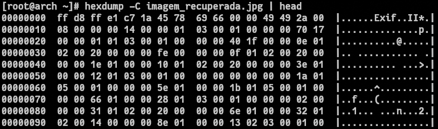
Identificação da Assinatura do Arquivo
Ao analisar os primeiros bytes do arquivo, é possível identificar a assinatura característica do formato JPEG:
FF D8 FF
Início da estrutura binária de um arquivo JPEG
Essa sequência representa o marcador Start Of Image (SOI), que indica o início de um arquivo JPEG. Esse marcador é utilizado por sistemas e ferramentas de análise para reconhecer automaticamente o tipo de arquivo.
A presença dessa assinatura confirma que o arquivo recuperado possui uma estrutura válida de imagem JPEG.
Logo após o marcador inicial, normalmente aparecem outros marcadores responsáveis por armazenar informações adicionais sobre a imagem, como metadados EXIF, tabelas de quantização e parâmetros de compressão.
Estrutura EXIF dentro do JPEG
Logo após a assinatura inicial, muitos arquivos JPEG armazenam metadados no formato EXIF. Esses metadados incluem informações como:
Essas informações são armazenadas em um bloco estruturado semelhante ao formato TIFF, que também pode ser identificado na análise hexadecimal.
No caso da imagem recuperada, esses dados foram confirmados anteriormente através do exiftool, que revelou informações sobre o dispositivo utilizado (CUBOT P80), a data de captura e as coordenadas geográficas registradas no momento da fotografia.
Identificação do Final do Arquivo
Assim como existe um marcador que indica o início da imagem, o formato JPEG também possui um marcador específico que indica o término do arquivo.
Para verificar o final do arquivo recuperado, pode-se utilizar o comando:
hexdump -C imagem_recuperada.jpg | tail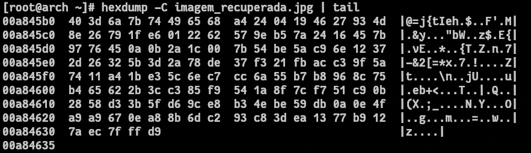
Esse marcador é representado pela sequência hexadecimal:
FF D9
Esse valor corresponde ao marcador End Of Image (EOI). A presença dele confirma que o arquivo JPEG foi recuperado de forma completa e que sua estrutura não está corrompida.
Localização de Assinaturas JPEG no Disco Bruto
Após a recuperação da imagem utilizando as estruturas do sistema de arquivos, é possível aprofundar a análise utilizando uma técnica conhecida como data carving. Diferentemente da recuperação baseada em metadados, essa abordagem não depende da estrutura do sistema de arquivos. Em vez disso, ela procura diretamente por padrões binários característicos de determinados tipos de arquivos dentro dos dados brutos armazenados na mídia.
No caso de imagens JPEG, existe uma assinatura binária específica que marca o início da estrutura do arquivo. Essa assinatura é representada pela sequência hexadecimal:
FF D8 FF
Start Of Image (SOI) de arquivos JPEG
Essa sequência corresponde ao marcador Start Of Image (SOI), que indica o início de um arquivo JPEG. Ao localizar esse padrão dentro da imagem do dispositivo, é possível identificar pontos onde potencialmente existe uma imagem armazenada.
Para realizar essa busca diretamente na imagem do pendrive foi utilizado o seguinte comando:
grep -oba $'\xff\xd8\xff' pendrive.imgEsse comando utiliza a ferramenta grep para procurar a sequência binária correspondente à assinatura JPEG dentro do arquivo pendrive.img, que representa a cópia bit a bit do dispositivo.
Os parâmetros utilizados possuem funções específicas.
O parâmetro -o instrui o grep a exibir apenas a sequência encontrada, em vez de mostrar toda a linha onde ela aparece. Isso facilita a visualização das ocorrências exatas da assinatura dentro do arquivo analisado.
O parâmetro -b faz com que o grep mostre o offset, ou seja, a posição em bytes dentro do arquivo onde a sequência foi encontrada. Esse valor é extremamente importante, pois indica exatamente onde a assinatura aparece dentro da imagem do disco.
Já o parâmetro -a força o grep a tratar o arquivo analisado como texto, mesmo que ele contenha dados binários. Como a imagem de um dispositivo de armazenamento contém dados brutos e não apenas texto legível, esse parâmetro é necessário para evitar que o grep interrompa a leitura ao encontrar bytes considerados não textuais.
A sequência utilizada na busca:
$'\xff\xd8\xff'
Representa em hexadecimal a assinatura binária do início de arquivos JPEG
$'\xff\xd8\xff' representa a assinatura JPEG em formato hexadecimal. O prefixo $' ' permite que caracteres binários sejam interpretados corretamente pelo shell, garantindo que o grep procure exatamente pelos bytes FF D8 FF.
Resultados da Busca
A execução do comando retornou as seguintes posições dentro da imagem do dispositivo:
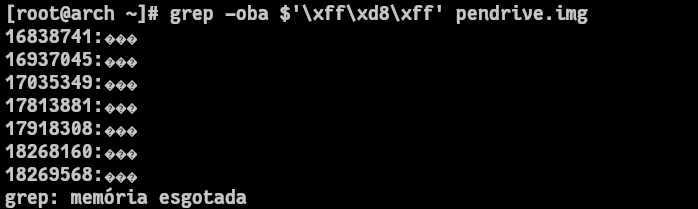
Cada um desses valores corresponde ao offset em bytes dentro da imagem pendrive.img onde a assinatura JPEG foi encontrada. Esses offsets representam pontos onde potencialmente existem imagens armazenadas no dispositivo.
A partir dessas posições é possível iniciar a extração de dados diretamente da imagem do disco para verificar se existe um arquivo JPEG completo associado a cada uma dessas assinaturas.
Por que aparecem caracteres como "���"
Na saída do comando também aparecem caracteres como:
���
Interpretação textual de bytes binários não imprimíveis
Esses caracteres não fazem parte do conteúdo real do arquivo JPEG. Eles aparecem porque o grep tenta exibir os bytes encontrados interpretando-os como caracteres de texto.
Como a sequência FF D8 FF corresponde a valores binários fora do conjunto de caracteres ASCII imprimíveis, o terminal não consegue representá-los corretamente. Quando isso ocorre, o sistema exibe símbolos substitutos como �, que indicam bytes não representáveis como texto.
Em outras palavras, esses caracteres não possuem significado textual; eles apenas representam dados binários que o terminal não consegue mostrar de forma legível.
Esse comportamento é esperado quando se utiliza ferramentas de busca textual para analisar arquivos binários.
Extração de uma Imagem a partir de um Offset Identificado
Após a identificação de múltiplas ocorrências da assinatura JPEG dentro da imagem do dispositivo, torna-se possível tentar reconstruir arquivos diretamente a partir dessas posições. Cada offset retornado pelo comando de busca representa um ponto onde foi encontrada a sequência hexadecimal FF D8 FF, indicando o possível início de uma imagem JPEG.
Entre os valores identificados durante a análise, um dos offsets encontrados foi:
16838741
bytes
Esse valor representa a posição em bytes dentro da imagem pendrive.img onde a assinatura de início de um arquivo JPEG foi localizada. A partir desse ponto é possível iniciar a extração de dados diretamente do disco bruto para verificar se existe uma imagem completa armazenada naquela região.
Para realizar essa extração foi utilizado o comando dd, que permite copiar dados diretamente a partir de posições específicas dentro de um arquivo ou dispositivo.
O comando executado foi:
dd if=pendrive.img of=carved_image1.jpg bs=1 skip=16838741 count=5000000Nesse comando, if=pendrive.img define a imagem do dispositivo como fonte de leitura, enquanto of=carved_image1.jpg especifica o arquivo que receberá os dados extraídos. O parâmetro skip=16838741 instrui o dd a ignorar os primeiros 16.838.741 bytes da imagem e iniciar a leitura exatamente na posição onde foi encontrada a assinatura JPEG.
O parâmetro count=5000000 define a quantidade de bytes que será copiada a partir desse ponto. Nesse exemplo, foram extraídos aproximadamente 5 MB de dados, valor suficiente para incluir toda a estrutura de uma imagem JPEG em muitos casos.
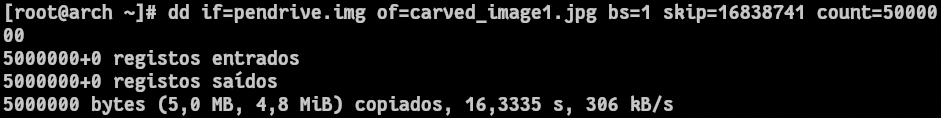
Verificação do Arquivo Extraído
Após a extração, o próximo passo consiste em verificar se os dados obtidos realmente correspondem a uma imagem JPEG válida. Para isso foi utilizado o comando file, que identifica o tipo de arquivo analisando sua assinatura binária.
O comando executado foi:
file carved_image1.jpgSe a extração tiver capturado corretamente uma estrutura JPEG válida, a saída do comando deverá indicar que o arquivo corresponde a uma imagem JPEG.
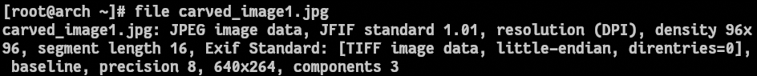
Análise de Metadados da Imagem Recuperada
Após a extração da imagem a partir do offset identificado no disco bruto, foi realizada uma análise de metadados utilizando a ferramenta exiftool. Essa ferramenta permite examinar as informações estruturais presentes no arquivo e identificar possíveis dados adicionais armazenados no formato EXIF.
O comando executado foi:
exiftool carved_image1.jpg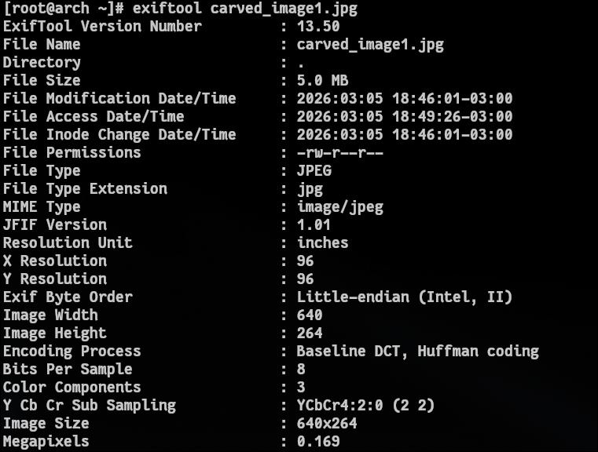
A análise revelou que o arquivo recuperado corresponde a uma imagem JPEG válida, contendo informações básicas relacionadas à estrutura do arquivo e às características da imagem.
Entre os dados identificados estão informações como o formato do arquivo, resolução da imagem e parâmetros de codificação utilizados na compressão JPEG. A saída também indica que o arquivo utiliza codificação Baseline DCT com compressão Huffman, que é o método de compressão mais comum utilizado em imagens JPEG.
Outro dado relevante identificado foi a resolução da imagem:
Image Width
640
Image Height
264
Isso indica que a imagem possui resolução de 640 × 264 pixels, resultando em aproximadamente 0,169 megapixels. Esse tipo de resolução é relativamente baixo quando comparado a imagens produzidas por câmeras modernas, o que sugere que o arquivo pode ter sido redimensionado ou otimizado para distribuição digital.
Diferentemente da imagem analisada anteriormente, que continha informações detalhadas sobre o dispositivo utilizado para capturar a fotografia, esta imagem apresenta um conjunto muito mais limitado de metadados. Isso ocorre porque arquivos obtidos a partir da internet frequentemente passam por processos de compressão, redimensionamento ou otimização antes de serem distribuídos.
Durante esses processos, muitos dos metadados EXIF originais são removidos. Plataformas de hospedagem de imagens, redes sociais e sistemas de gerenciamento de conteúdo frequentemente eliminam esses dados por motivos de privacidade, redução do tamanho do arquivo ou padronização do formato.
Como consequência, imagens baixadas da internet geralmente contêm apenas informações estruturais básicas necessárias para a interpretação do arquivo, como resolução, método de compressão e parâmetros mínimos de codificação.
Mesmo com a ausência de metadados detalhados, a análise ainda confirma que o arquivo recuperado possui uma estrutura JPEG íntegra e pode ser interpretado corretamente por softwares de visualização de imagem.
Essa diferença entre a imagem capturada diretamente por um dispositivo e a imagem obtida da internet ilustra como o contexto de origem de um arquivo pode influenciar significativamente a quantidade de informações adicionais disponíveis em seus metadados.